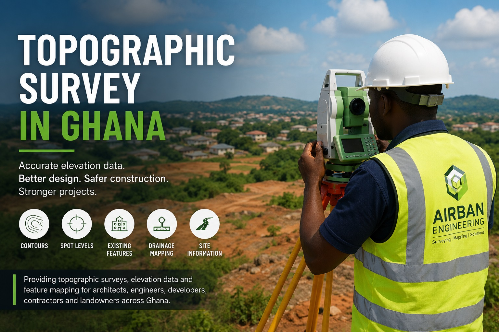

“Good design starts with accurate ground data.”
A topographic survey gives a detailed picture of the land surface. It shows ground levels, slopes, contours, existing structures, drains, roads, trees and other important site features.
This information is essential before design, planning, drainage works or construction begins. Without it, your project team may be working with assumptions instead of real ground conditions.
What Is a Topographic Survey?
A topographic survey maps the shape and features of a site. It helps architects, engineers and developers understand how the land rises, falls, drains and connects with existing features.
It is especially useful before:
- Building design
- Drainage design
- Road or access planning
- Earthworks and cut-and-fill planning
- Site layout preparation
- Large land development projects
What We Capture
Depending on your project requirements, a topographic survey may capture:
- Ground spot levels and contour lines
- Existing buildings and structures
- Roads, paths, walls and fences
- Drains, culverts and watercourses
- Visible utility features such as poles and manholes
- Trees, landscape features and site constraints
- Boundary-related site features where required
Why Topographic Surveys Matter
Accurate terrain data supports better engineering decisions. It helps reduce guesswork and prevents costly design or construction mistakes.
A topographic survey helps with:
- Drainage planning
- Earthworks estimation
- Platform and foundation planning
- Road alignment and access design
- Flood risk awareness
- General site development decisions
Who Needs a Topographic Survey?
- Architects: for site layouts and building designs
- Engineers: for drainage, roads, platforms and infrastructure design
- Developers: for assessing site constraints before construction
- Contractors: for earthworks and site preparation
- Landowners: for understanding slopes, drainage risks and site conditions
Our Topographic Survey Process
- Project brief: We discuss your site, design needs and required deliverables.
- Field survey: We collect accurate levels and site features using surveying equipment.
- Data processing: We process the field data into contours, spot levels and mapped features.
- Final output: We provide clear survey plans and digital outputs for design or planning use.
What You Receive
Depending on the project scope, deliverables may include:
- Topographic survey plan
- Spot levels
- Contour lines
- Feature mapping
- Digital drawings or CAD-ready outputs
- Site data for design and planning
Areas We Serve
Airban Engineering provides topographic surveying services across Ghana, including Cape Coast, Kasoa, Buduburam, Accra and surrounding areas.
Explore our local service pages: Cape Coast, Kasoa, and Buduburam.
Need a Topographic Survey?
If you need elevation data, contours or a site survey for design, drainage or construction, Airban Engineering can support your project.
Send us your location and project requirements. We’ll guide you step by step.
Request Topographic SurveyNeed professional land surveying services in Ghana? Visit our land surveying page here.